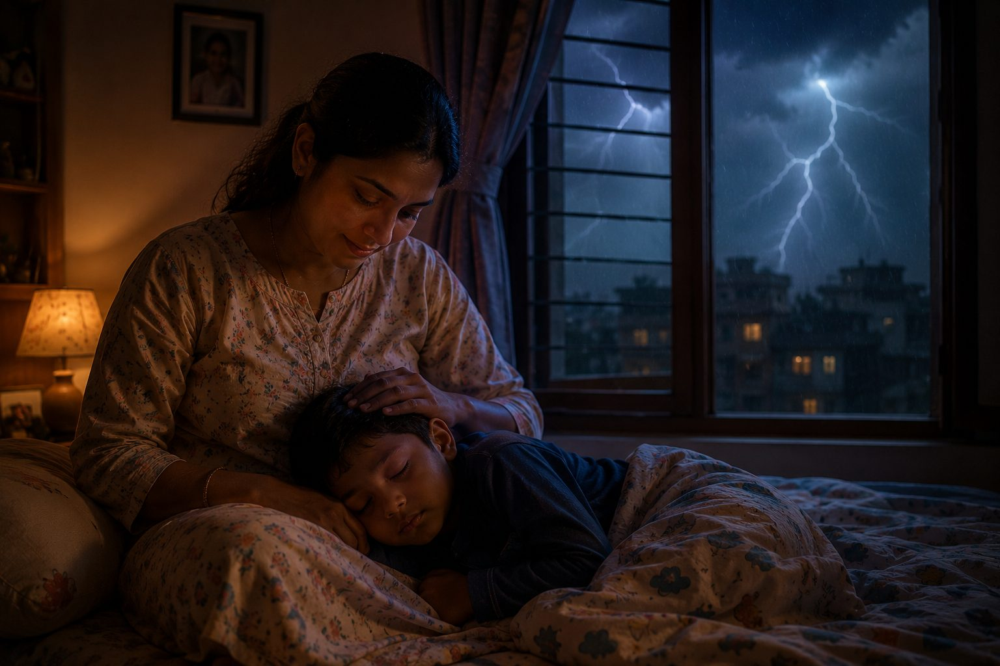

The Child Who Couldn't Sleep

One night, a little boy woke up to the sound of thunder. The rain was pouring.
Lightning filled the room for a moment...
before everything went dark again.
He pulled the blanket over his head. Tried closing his eyes. But every clap of thunder made him more afraid. A few moments later, his mother quietly walked into the room. She didn't explain how thunder was formed. She didn't promise the rain would stop soon. She simply sat beside him. Held his little hand. Gently stroked his hair.
Within a few minutes...
the little boy was asleep.
The thunder hadn't stopped. The rain hadn't become lighter. The storm was exactly the same.
The only thing that had changed...
was that he knew he wasn't facing it alone.
That made me think.
How often do I spend my energy asking God to calm every storm around me...
when what I really need...
is the assurance that He is with me in the middle of it.
Sometimes peace doesn't come because life suddenly becomes easier.
Sometimes peace comes because my heart remembers...
who is sitting beside me.
What storm has been stealing my peace lately?
Have I been waiting for the storm to end...
before I allow my heart to rest?
Maybe today...
I don't need the storm to become quieter.
Maybe I simply need to become more aware...
of the One who has never left my side.
Because sometimes...
the storm doesn't stop.
My heart does.